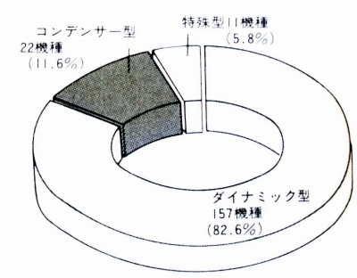
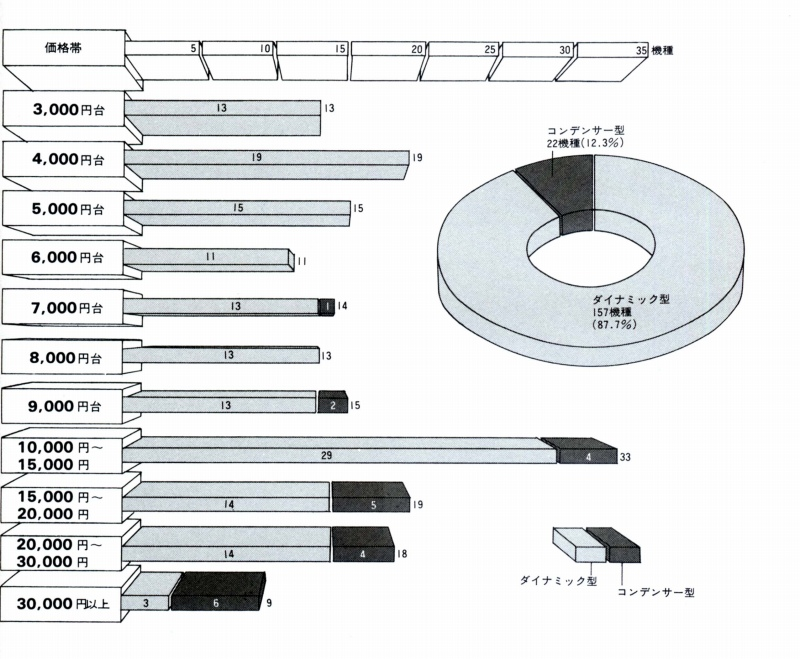
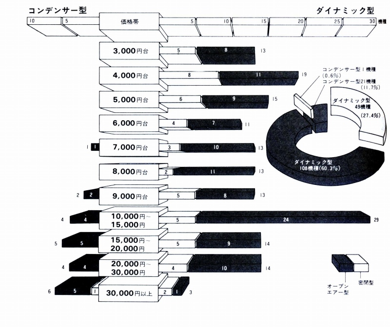

1978年の国内ヘッドフォン事情
収集した資料の中に1978年の国内で販売されていたヘッドフォンの機種別の統計をグラフ化したものがありましたので、紹介します。当サイトのメイインである各機種別のデータではわかりにくい、30年前ヘットホン全般の状況をご覧ください。
�@型式別分類

まだスタックス以外でも、各社の最高級機にコンデンサー型が残っていた時代です。特殊型とは当時まだ生き残っていた４チャンネル用や、ＦＭトランスミッターを利用したコードレス機などです。
�A価格帯別構成

１万円以下のコンデンサー型はすべてオーレックス（東芝）のヘッドフォンジャックに直接接続するタイプのエレクトレット型です。コンデンサー型は22機種中10機種が２万円以上のクラスに属しています。ちなみに３万以上のダイナミック型はベイヤーDT-48(\32,500)、コスDynamic/10(\32,000)、ヤマハHP-1000(\35,000)です。
�Bオープンエア型/密閉型の構成

これより5年ほど前なら密閉型が圧倒的だったのでしょうが、約７割がオープンエアー型になっています。なお、ここでの「オープンエアー」型はイヤパッドでの音漏れを容認するタイプと、ユニット背面の開放で判定するタイプのどちらかに属せば、オープンエアー型としているようです。ゼンハイザーのHD-414やソニーのMDR-3のように、両方の条件を満たしているものに限ればもっと少なくなるでしょう。まだソニーのMDR-3以降の小型・軽量機の流行も無く、インナーイヤータイプがほとんど存在しない時代でした。
ちなみに密閉型のコンデンサー型はコスのESP/9B、バイアス電流供給の歴とした純コンデンサー型。スタックスの4070は「イヤースピーカー」としてならともかく、コンデンサー型ヘッドフォンとしては世界初の密閉型ではありません。
追記 この資料に刺激を受け、特定の時点でのヘッドフォン・リストの作成を始めました。よろしければご覧ください。→ 時代別のヘッドフォンリスト